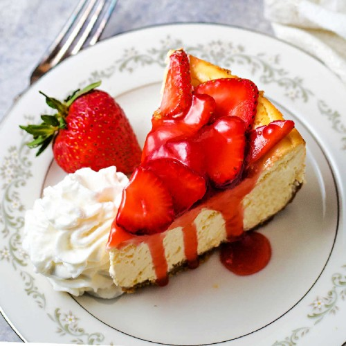
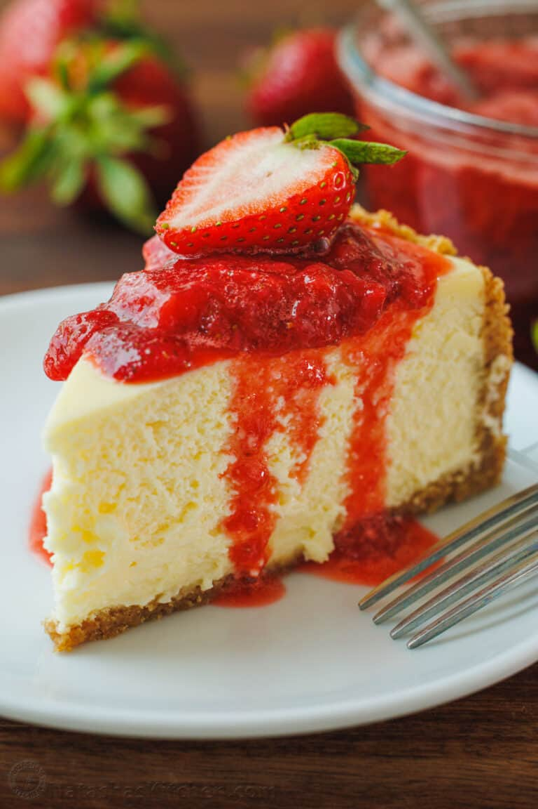

Strawberry Cheesecake

How to make Strawberry Cheesecake
Do you like pastries? I got a nice recipe of a Strawberry Cheesecake.
Ingriedients
- Creame Cheese
- Sour Cream
- Graham Cracker Crumbs
- Eggs
- Butter
- Sugar
- Lemon Juice
- Vanilla
- Strawberrys

Instructions
- Preheat oven to 325°F (163°C). Grease a 9×13 pan
- Combine the crust ingredients in a small bowl. Press the mixture into the bottom of the prepared pan.Bake the crust for 10 minutes, then set aside to cool.
- Reduce the oven temperature to 300°F (148°C).In a large bowl, blend the cream cheese, sugar and flour on low speed until well completely combined and smooth. Be sure to use low speed to reduce the amount of air added to the batter, which can cause cracks. Scrape down the sides of the bowl.
- Add the sour cream and vanilla extract mix on low speed until well combined.
- Add eggs one at a time, mixing slowly to combine. Scrape down the sides of the bowl as needed to make sure everything is well combined
- Pour the batter into the pan with the crust and spread evenly.Bake the cheesecake for 30 minutes.
- Put the cheesecake in the fridge to cool completely, 3-4 hours.
- To make the strawberry topping, combine the sugar and cornstarch in a large saucepan. Stir in the strawberry puree.Cook over medium heat, stir constantly until mixture thickens and come to a boil, about 15 to 20 minutes.
- Allow to boil for 1 1/2 minutes, then remove from heat.Stir in vanilla extract and chopped strawberries and allow to cool for about 15-20 minutes.
- Pour the topping over the cheesecake. You can add the sauce while the cheesecake is chilling and let it all cool together, or let the sauce cool on its own and add it to cheesecake before serving, or even add it as you cut slices. The topping will thicken as it cools.
- To make the whipped cream, add everything to a large mixer bowl and whip on high speed until stiff peaks form. Serve slices of the cheesecake with the whipped cream, if desired.